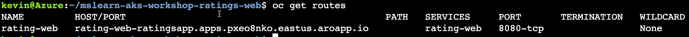
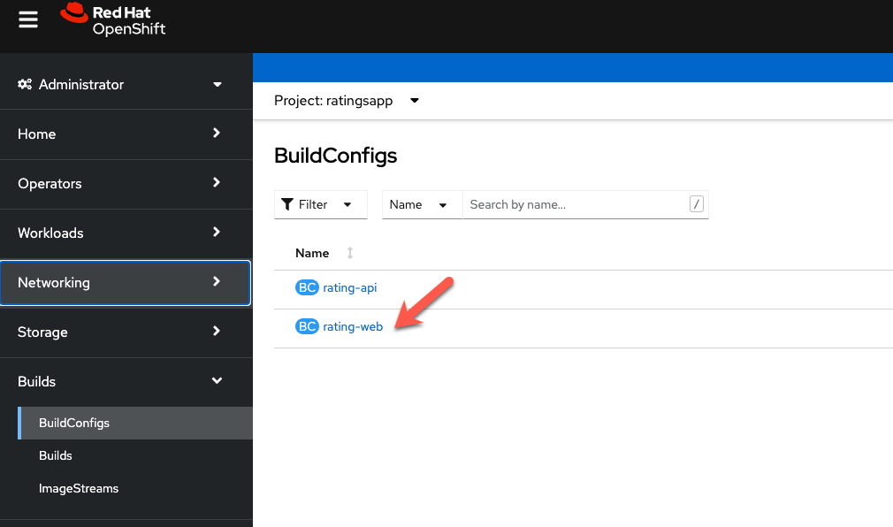
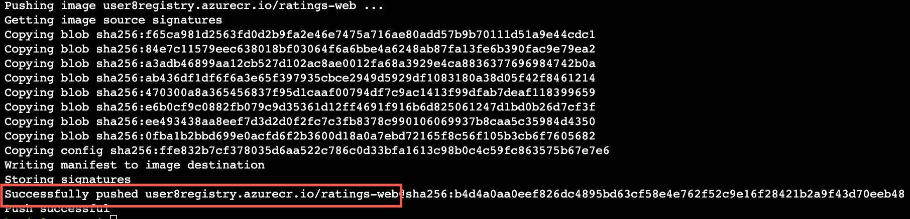
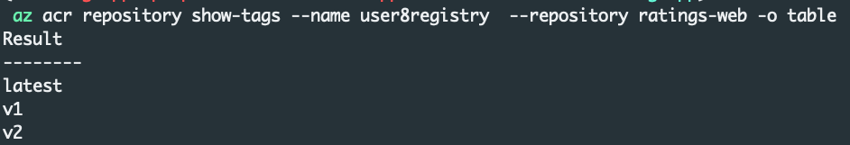

Install the Frontend#
To install the frontend part of the application, we will be manually building the container image, storing the image in Azure Container Registry and then use manifests to install the frontend. Later on in the workshop, we will be making changes to the source code so the first step you will need to do is fork the code repository.
Open the following GitHub repository and Fork it to your local Git Hub account. https://github.com/rh-mobb/aro-workshop-ratings-web
Setup git#
git config --global user.email "<your github email>"
git config --global user.name “<your github username>”
git init
Clone the Git Repo#
From the Azure Cloud Shell, clone the git repo.
Deploy the application#
Set the API endpoint environment variable
Expose the application
Get the application url
Open the hostname retrieved above in your web browser with http://

Now that we have a working app, we are going to update the build to push the image to your Azure Container Registry.
Start by getting the password for your Azure Container Registry Instance:
az acr update -n $REGISTRY_NAME --admin-enabled true
ACRPWD=$(az acr credential show -n $REGISTRY_NAME --query 'passwords[0].value' -o tsv)
Create a secret for ACR and link it.
oc create secret docker-registry \
--docker-server=$REGISTRY_NAME.azurecr.io \
--docker-username=$REGISTRY_NAME \
--docker-password=$ACRPWD \
--docker-email=unused \
acr-secret -n ratingsapp
oc secrets link default acr-secret --for=pull,mount
oc secrets link builder acr-secret --for=pull,mount
Update the BuildConfig to user Azure Container Registry#
From the OpenShift Console, click on Builds, BuildConfigs and then the rating-web build config

Click on YAML and then scroll down to the output section and change it so it loosk like this and click save.
Info
Make sure to change the acr registry URL to match the one you created. ACR does not allow '-' in the name so the name of your registry starts with your userid without the '-' followed by registry. The example below is for the user-8 userid.
output:
to:
kind: DockerImage
name: <YOUR USER ID>registry.azurecr.io/ratings-web
pushSecret:
name: acr-secret
Rebuild the application so that is now pushes the image to the Azure Container Registry.
View the logs of the build. Start by find the build pod name:
look for the name of the builder pod that is running and get the logs of that pod
The build process takes a few minutes, wait until the process finishes and you see that the image was succesfully push to ACR. 
Finally, you can check with ACR directly to see the repository and images that you have pushed for the frontend.
From the Azure Cloud Shell, run:
Expected Output: 